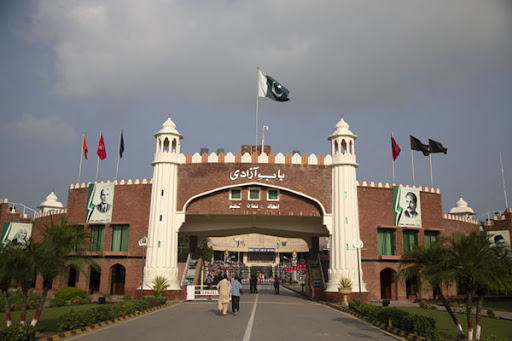

<div class="portfolio-single-load clearfix">
    <div class="custom-full-width-box">
        <div class="custom-container">
            <div class="custom-row align-items-center">
                <div class="custom-image-column">
                    
                </div>
                <div class="custom-text-column">
                    <h2 class="custom-heading">Wagah Border</h2>
                    <p class="custom-paragraph">
                        The Wagah Border Ceremony is a daily military ritual that takes place at the Wagah-Attari border crossing between India and Pakistan. Symbolizing the closing of the border gates and the lowering of the national flags, the ceremony is characterized by elaborate military drills, synchronized marching, and patriotic fervor. Drawing crowds of spectators from both countries, the Wagah Border Ceremony is a unique cultural experience that celebrates the shared history, heritage, and aspirations of the people of India and Pakistan.
                    </p>
                </div>
            </div>
        </div>
    </div><!-- .custom-full-width-box end -->

</div><!-- end single-project -->
